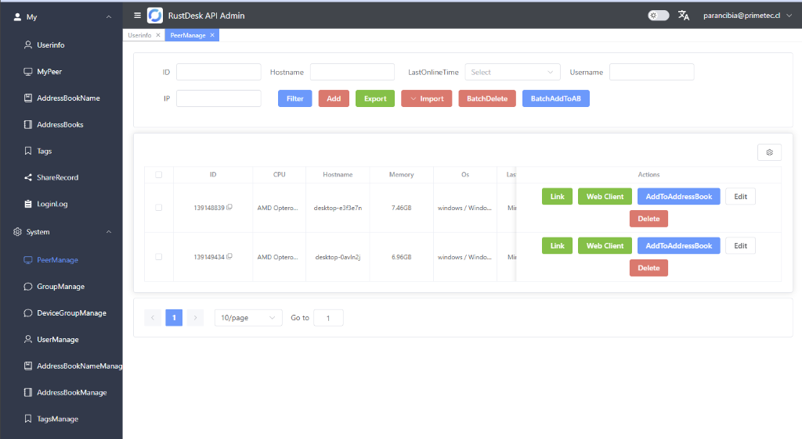
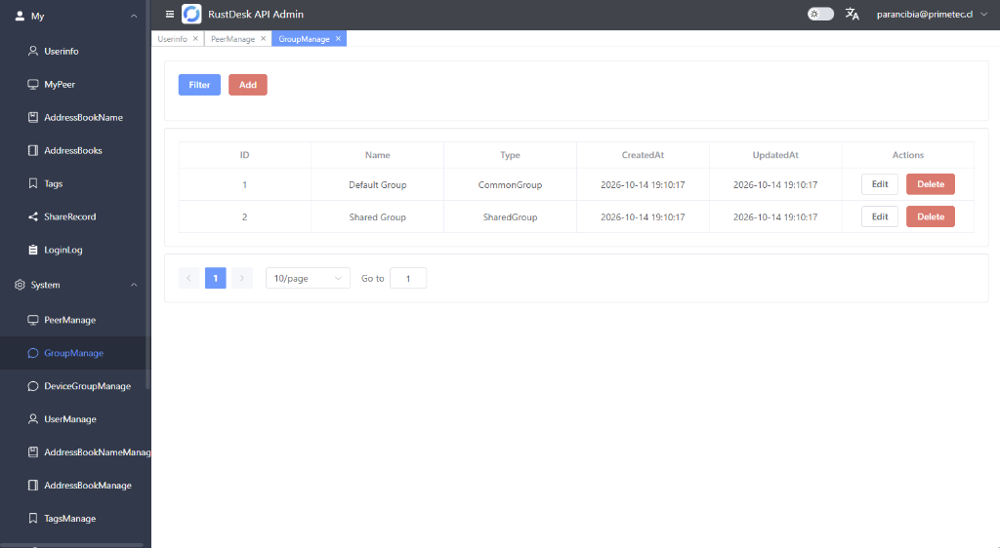
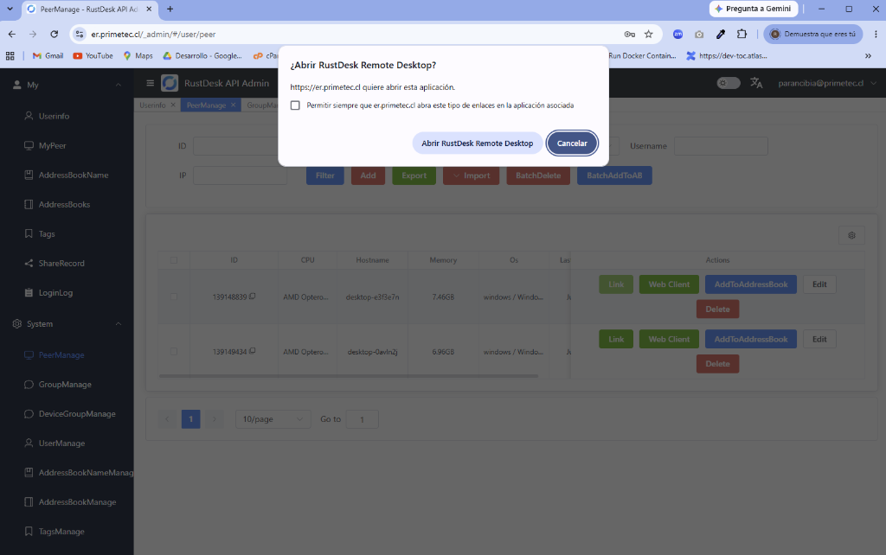
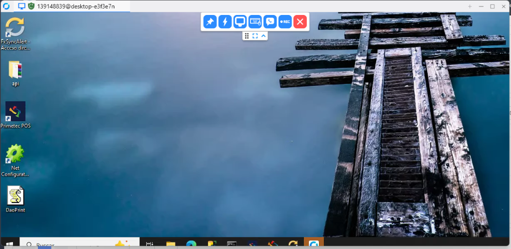

Panel de administracion: er.primetec.cl
Ingresa a https://er.primetec.cl con cualquiera de las siguientes cuentas. Las tres cuentas tienen permisos de administrador y comparten la misma contrasena inicial.
| Usuario | Contrasena inicial |
|---|---|
| parancibia@primetec.cl | De5-e@KM7*zWv6 |
| polivares@primetec.cl | De5-e@KM7*zWv6 |
| lmedina@primetec.cl | De5-e@KM7*zWv6 |
Para poder administrar remotamente los equipos servidores desde el panel, cada servidor debe tener instalado el cliente RustDesk, ya configurado para apuntar a nuestro servidor interno.
En el menu lateral, bajo System > PeerManage, aparece la lista completa de todos los equipos servidores que ya tienen el cliente instalado y registrado contra nuestro servidor.

Por cada equipo de la lista, en la columna Actions tienes estos botones:
| Boton | Para que sirve |
|---|---|
| Link | Conecta usando la app de escritorio de RustDesk instalada en tu PC (si la tienes instalada). |
| Web Client | Conectarse remotamente desde el navegador, sin instalar nada. Este es el boton recomendado para el uso diario. |
| AddToAddressBook | Agrega el equipo a tu libreta de direcciones personal, para tenerlo guardado con un alias. |
| Edit | Permite editar el peer: cambiarle el alias/nombre visible, asignarlo a un grupo, agregar tags, etc. |
| Delete | Elimina el registro del equipo de la lista (no desinstala RustDesk del servidor). |
En System > GroupManage se administran los grupos. Por defecto ya existen dos:

| Grupo | Tipo | Para que sirve |
|---|---|---|
| Default Group | CommonGroup | Grupo por defecto donde quedan los usuarios/equipos al crearse, sin compartir automaticamente entre ellos. |
| Shared Group | SharedGroup | Los equipos de este grupo quedan visibles para todos los usuarios que pertenezcan a el, util para compartir acceso entre varias personas sin configurar cada equipo por separado. |
Con el boton Add puedes crear un grupo nuevo, y con Edit en un peer (ver seccion anterior) puedes asignarlo a un grupo distinto.


Al hacer doble clic en el acceso directo "PrimeTec RustDesk" (escritorio o menu inicio), Windows puede mostrar el error "Falta el icono de acceso directo" pidiendo ubicar rustdesk.exe manualmente.
Solucion rapida (sin reinstalar, arregla el acceso directo en el equipo afectado):
Solucion definitiva (recomendada para equipos nuevos o reinstalaciones): los instaladores generados a partir de la version corregida de PrimeTecRustDesk.iss ya fuerzan que RustDesk se instale en la misma carpeta que usa el acceso directo, por lo que este problema no vuelve a ocurrir. Si vas a instalar en un equipo nuevo, descarga la version mas reciente del instalador desde la pagina de releases (ver seccion 2) en vez de reutilizar un instalador antiguo ya generado.
Con la cuenta, el cliente instalado y lo basico de PeerManage/Grupos, ya puedes administrar de forma remota los equipos servidores desde el panel er.primetec.cl.